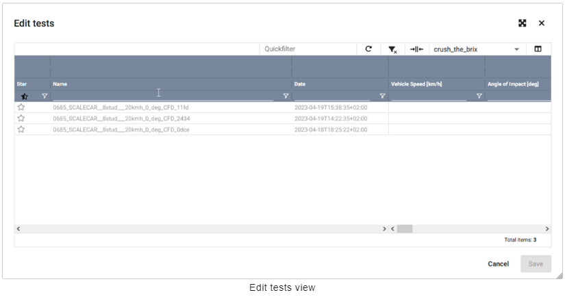

Result
How to
Initially configuring Result
관리자 등 포괄적인 권한을 가진 사람이 처음에 Result 설정을 하는 것이 좋습니다. 이 사람은 사전 설정을 만들고 수정할 수 있는 권한과 추가 기능을 활성화할 수 있는 권한이 있어야 합니다. 이 초기 구성이 완료되면 관리자는 다른 사용자에게 특정 기능에 대한 액세스 권한을 부여할 수 있습니다.
Working with Result
초기 구성이 완료되면 Result에서 실제 테스트 결과와 시뮬레이션 결과를 관리할 수 있습니다. 예를 들면 다음과 같습니다:
Modify the layout
이 페이지에서는 필요에 맞게 Result 작업 공간을 수정하는 방법을 알려드립니다. 사전 설정을 선택하고, 창을 다시 정렬하고, 그리드에서 열을 켜고 끄는 방법을 배우게 됩니다.
Select a preset
Presets은 작업 공간을 처음 구성하는 방법을 정의합니다. 예를 들어 그리드에 어떤 열 머리글을 포함할지 지정합니다. Result에 처음 로그인하면 사용 가능한 사전 설정 목록이 표시되고 하나를 선택하라는 메시지가 표시됩니다. 다음에 로그인할 때 이 선택 항목이 기억됩니다.
Presets 목록이 도구 모음에 표시됩니다. 다른 preset을 선택하려면 이 목록을 클릭합니다.
Create presets in advance
Presets은 목록에서 선택하기 전에  > Configuration > Result > Presets에서 구성해야 합니다. 이 초기 구성은 해당 권한이 있는 사용자(예: 관리자)가 수행합니다.
> Configuration > Result > Presets에서 구성해야 합니다. 이 초기 구성은 해당 권한이 있는 사용자(예: 관리자)가 수행합니다.
Close and re-open windows
각 창에는 고유한 기능이 있으며 개별적으로 열고 닫을 수 있습니다. 닫힌 창은 다음과 같이 다시 열 수 있습니다:
도구 모음의 왼쪽에 있는 Result 드롭다운 목록을 클릭합니다.
마우스 커서를 Workspace 위로 이동합니다.
창을 클릭하여 워크스페이스에 추가합니다. 참고: 이미 추가된 창은 체크 표시(
 )로 표시됩니다.
)로 표시됩니다.창을 끌어서 놓아 필요에 따라 정렬합니다.
Drag and drop windows
창은 드래그 앤 드롭으로 이동할 수 있습니다.
창을 탭으로 잡고 원하는 위치로 끌어다 놓습니다.
회색으로 표시된 영역은 가능한 창 위치를 나타냅니다.
여러 개의 창이 같은 위치에 있는 경우 탭으로 그룹화됩니다.
Reset the layout
최신 구성(last configuration), 즉 선택한 사전 설정과 창 배치가 사용자 로그인에 바인딩됩니다. 레이아웃을 기본 배열로 재설정하려면 Result > Workspace > Reset layout을 클릭합니다.
Display tests in the grid
이 페이지에서는 Result 테스트 그리드에 테스트를 표시하는 방법을 설명합니다. project, collections 및 scenarios를 사용하여 그리드에 표시되는 테스트를 제어하는 방법을 배웁니다.
Basic concept
그리드의 각 선은 하나의 테스트를 나타냅니다. 일부 라인은 실제 테스트일 수 있고 다른 라인은 시뮬레이션일 수 있습니다. 그리드에 표시되는 테스트는 선택한 프로젝트, 컬렉션 및 시나리오에 따라 달라집니다 (  ).
).
Project: 특정 프로젝트와 관련된 테스트입니다.
Collection: 프로젝트와 독립적인 사용자 정의 컬렉션의 일부로 수동으로 선택한 테스트입니다.
Scenario: 특정 충돌 시나리오와 관련된 테스트입니다. 예를 들어 차량 속도, 지시(directive) 또는 장애물 중첩(barrier overlap) 등이 있습니다. 이러한 시나리오는 preset 자체 내에서 정의됩니다.
Why don’t I see any tests?
하나 이상의 시나리오(scenario)와 하나 이상의 프로젝트 또는 컬렉션(project & collection)을 선택한 경우에만 그리드에 테스트가 표시됩니다.
Projects
Select a project
Result로 이동하여 Projects and Collections 창을 찾습니다.
Projects 옆의
 버튼을 클릭합니다. Select projects 보기가 열립니다.
버튼을 클릭합니다. Select projects 보기가 열립니다.테스트 그리드에 테스트가 표시되어야 하는 프로젝트를 선택합니다(
 ).
).OK를 클릭합니다. 테스트가 테스트 그리드에 표시됩니다. 개별 시나리오를 선택하여 테스트를 추가로 필터링할 수 있습니다.
Tips for quicker selection
A: 즐겨찾기로 표시된 프로젝트만 보려면 Starred Projects 탭으로 전환합니다.
B: 검색하려는 프로젝트의 이름을 입력합니다.
Remove a project
Result로 이동하여 Projects and Collections 창을 찾습니다.
프로젝트 옆의 버튼을 클릭합니다.
프로젝트가 목록에서 제거됩니다. 프로젝트 자체는 삭제되지 않습니다.
Collections
Select a collection
Result로 이동하여 Projects and Collections 창을 찾습니다.
Collections 옆의
버튼을 클릭합니다. Select collections 보기가 열립니다.선택 사항: Quick filter 필드에 검색하려는 프로젝트의 이름을 입력합니다.
테스트 그리드에 테스트가 표시되어야 하는 컬렉션을 클릭합니다. 참고: 여러 컬렉션을 선택할 수도 있습니다(Crtl + 클릭).
OK를 클릭합니다. 테스트가 테스트 그리드에 표시됩니다. 개별 시나리오를 선택하여 테스트를 추가로 필터링할 수 있습니다.
Remove a collection
Result로 이동하여 Projects and Collections 창을 찾습니다.
Collection 옆의 버튼을 클릭합니다.
Collection이 목록에서 제거됩니다. 컬렉션 자체는 삭제되지 않습니다.
Create a new collection
Result로 이동하여 Projects and Collections 창을 찾습니다.
Collections 옆의
버튼을 클릭합니다. Select collections 보기가 열립니다.New를 클릭합니다. New collection 보기가 열립니다.
필요에 따라 설정을 구성합니다. 아래 표에 설명이 나와 있습니다.
OK를 클릭합니다.
Edit or copy a collection
기존 collection을 편집하거나 복사할 수도 있습니다. Projects and Collections 창에서 컬렉션 이름을 마우스 오른쪽 버튼으로 클릭하기만 하면 됩니다. 컨텍스트 메뉴가 열립니다. 여기에는 컬렉션을 편집하거나 복사하는 옵션이 포함되어 있습니다.
Setting |
Explanation |
|---|---|
Name (required) |
Collection 이름을 입력합니다. |
Public Access(required) |
다른 사용자가 collection을 사용할 수 있도록 할지 여부를 결정합니다:
|
Discipline(required) |
드롭다운 목록에서 충돌 안전성, 피로 또는 보행자 안전과 같은 분야를 선택합니다. |
Description |
Collection에 대한 설명을 입력합니다. |
Add a test to a collection
Result로 이동하여 Projects and Collections 창을 찾습니다.
이미 collection을 하나 이상 선택했는지 확인합니다.
테스트 그리드에서 collection에 아직 포함되지 않은 테스트를 마우스 오른쪽 버튼으로 클릭합니다. 상황에 맞는 메뉴가 열립니다. 참고: 여러 개의 시험을 선택할 수도 있습니다(Crtl + 클릭).
Add to collection(01)를 선택합니다. 테스트가 collection에 추가됩니다. collection 이름 뒤의 괄호 안의 숫자는 collection에 포함된 시험의 수를 나타냅니다(02).
Remove a test from a collection
Result로 이동하여 Projects and Collections 창을 찾습니다.
이미 collection을 하나 이상 선택했는지 확인합니다.
테스트 그리드에서 collection에서 제거해야 하는 테스트를 마우스 오른쪽 버튼으로 클릭합니다. 컨텍스트 메뉴가 열립니다. 참고: 여러 개의 테스트를 선택할 수도 있습니다(Crtl + 클릭).
Remove from collection를 선택합니다. 시험이 collection에서 제거됩니다.
Scenarios
Result에 표시되는 scenarios는 사전 설정에 정의된 scenarios에 따라 다릅니다. 예제 이미지를 보면 scenarios가 트리 구조로 정의되어 여러 수준의 필터링을 제공하는 것을 볼 수 있습니다:
Filtering level: 충돌 시나리오(정면, 측면, 후면, 기타)
Filtering level: 자동차 브랜드
Filtering level: 차량 속도
Filtering level: 중복
각 노드의 체크박스를 활성화 또는 비활성화하여 그리드에 테스트를 표시하거나 표시하지 않을 수 있습니다.
왼쪽 상단에는 검색어를 입력할 수 있는 빠른 필터(A)가 있어 검색어에 따라 선택 가능한 노드의 범위를 좁힐 수 있습니다.
또한 다음과 같은 제어 옵션(B)이 있습니다:
- : 이전 선택 항목이 토글됩니다. 이전에 선택했던 항목이 선택 해제되고 그 반대의 경우도 마찬가지입니다.
 : 프리셋에 정의된 기본 선택이 복원됩니다.
: 프리셋에 정의된 기본 선택이 복원됩니다.: 모든 노드가 확장됩니다.
: 모든 노드가 접힙니다.
Group and filter tests
이 페이지에서는 Result 테스트 그리드에서 특정 테스트를 찾는 방법을 설명합니다. 열 머리글(column headers)을 기준으로 테스트를 그룹화하고, 열 필터를 적용하고, 데이터를 오름차순 또는 내림차순으로 정렬하는 방법을 배우게 됩니다.
Basic concept
그리드의 각 줄은 하나의 테스트(B)를 나타내고 각 열은 하나의 특정 테스트 속성(A)을 나타냅니다.
열 헤더(column headers)를 기준으로 테스트를 그룹화할 수 있습니다.
필터를 적용하여 특정 테스트만 표시할 수 있습니다.
테스트를 오름차순 또는 내림차순으로 정렬할 수 있습니다.
Group tests by column headers
Result로 이동합니다.
열 머리글의 이름 위로 마우스 커서를 이동합니다. 커서 모양이 () 모양으로 바뀝니다.
열 머리글을 Drag here to set row groups로 드래그합니다. 이 영역은 표의 왼쪽 상단 모서리에 있습니다. 그리드의 데이터는 이 열을 기준으로 그룹화됩니다.
필요한 경우 다른 열 머리글도 같은 방식으로 그룹화합니다. 이렇게 하면 여러 수준의 그룹이 만들어집니다.
Alternative to drag & drop
Column headers를 기준으로 테스트를 그룹화하는 다른 방법도 있습니다:
Result로 이동합니다.
Column header 위로 마우스 커서를 이동하고 (
 )를 클릭합니다. 상황에 맞는 메뉴가 열립니다.
)를 클릭합니다. 상황에 맞는 메뉴가 열립니다.Group by [column name] 옵션을 선택합니다. 그리드의 데이터가 이 열을 기준으로 그룹화됩니다.
필요한 경우 다른 column headers도 같은 방식으로 그룹화합니다. 이렇게 하면 여러 수준의 그룹화가 생성됩니다.
Apply column filters
Result로 이동합니다.
Column header 바로 아래 줄에 텍스트를 입력합니다.
선택사항: (
 )를 클릭하여 추가 필터 옵션에 액세스합니다.
)를 클릭하여 추가 필터 옵션에 액세스합니다.필요한 경우 다른 열에도 같은 방법으로 필터를 적용합니다.
Change the sorting order
Result로 이동합니다.
오름차순으로 정렬하려면 열 머리글(column header)을 클릭합니다.
내림차순으로 정렬하려면 두 번 클릭합니다.
정렬을 제거하려면 세 번 클릭합니다.
Sort multiple columns
여러 열을 기준으로 정렬할 수도 있습니다. 예를 들어 먼저 테스트 결과를 날짜별로 정렬할 수 있습니다. 그런 다음 같은 날짜에 여러 테스트가 수행된 경우 이러한 테스트를 알파벳 순서로 정렬할 수 있습니다.
Result로 이동합니다.
Column header를 클릭하여 데이터를 정렬합니다. 예를 들어 테스트 결과를 날짜별로 정렬합니다.
Shift 키를 누른 상태에서 다른 열 머리글(column header)을 클릭하여 두 번째 수준별로 정렬합니다. 예를 들어 같은 날짜에 여러 개의 테스트가 수행된 경우 이름별로 알파벳순으로 정렬할 수 있습니다. 참고: 열 레이블 오른쪽에 표시되는 숫자는 정렬이 적용되는 순서를 나타냅니다. 이 숫자는 여러 열에 걸쳐 정렬되는 순서를 이해하는 데 도움이 됩니다.
필요한 경우 Shift 키를 누른 상태에서 추가 열 머리글을 계속 클릭합니다.
Create tests
이 페이지에서는 새 테스트를 수동으로 생성하는 방법을 설명합니다. 자동 업로드는 명령줄 도구인 SCALE.cli 또는 타사 백엔드 데이터 가져오기를 위한 사용자 지정 솔루션을 사용하여 수행할 수 있습니다.
Open the “Create new test” view
Result로 이동합니다.
테스트 또는 빈 격자를 마우스 오른쪽 버튼으로 클릭합니다. Context 메뉴가 나타납니다.
Context 메뉴에서
Create new test을 선택합니다. 새 창이 열립니다.
Save basic information about the test
테스트에 대한 몇 가지 기본 정보를 입력합니다. 예를 들어 테스트의 이름을 지정하고 테스트가 속한 프로젝트를 지정합니다.
Setting |
Explanation |
|---|---|
Search project (mandatory) |
각 테스트는 기존 프로젝트에 할당해야 합니다. 드롭다운 목록에서 프로젝트를 선택합니다. |
Test name(mandatory) |
테스트의 이름을 입력합니다. 테스트가 생성되면 시험 세부 정보 페이지 상단에 시험 이름이 표시됩니다. |
Create another |
드롭다운 목록에서 충돌 안전성, 피로 또는 보행자 안전과 같은 분야를 선택합니다. |
Description |
이 테스트 레코드를 저장한 후 바로 다른 테스트 레코드를 만들려면 이 상자(
|
Add metadata template
Templates를 사용하면 테스트를 더 빠르게 만들 수 있습니다. 각 템플릿에는 미리 정의된 속성 및 속성 값 세트가 포함되어 있기 때문입니다. 템플릿을 선택하면 템플릿의 모든 속성과 속성 값이 자동으로 테스트에 적용되며, 필요한 경우 추가로 수정할 수 있습니다. 참고: 템플릿을 테스트에 추가하려면 템플릿이 이미 생성되어 있어야 합니다. 템플릿 생성에 대해 자세히 알아보세요.
Add metadata templates를 클릭하여 영역을 확장합니다. 왼쪽 아래에 사용 가능한 모든 템플릿 목록이 표시됩니다.
목록에서 template을 클릭합니다. 팝업 창이 열립니다. 여기에서 템플릿을 적용할 때 변경되는 사항에 대한 개요를 볼 수 있습니다. 개요에는 다음 정보가 포함되어 있습니다:
Change: 이 열은 어떤 유형의 변경이 이루어지는지(예: 속성이 추가되는지 또는 속성 값이 변경되는지)를 알려줍니다.
Attribute: 이 열에는 속성의 식별자(identifier)가 표시됩니다.
Current Value: 이 열은 속성의 현재 값을 알려줍니다. 즉, 템플릿이 적용되기 전의 속성 값입니다.
Next Value: 이 열은 템플릿이 적용된 후의 속성 값을 알려줍니다.
필요에 따라 개별 변경 사항을 선택하거나 선택 해제(
)한 다음 확인을 클릭합니다. 팝업 창이 닫힙니다. 템플릿의 속성과 값이 개요에 추가됩니다.선택 사항: Value 아래의 한 줄을 클릭합니다. 해당 줄을 편집할 수 있게 됩니다. 즉, 이제 다른 값을 선택하거나 직접 값을 입력할 수 있습니다.
선택 사항: 목록에서 다른 템플릿을 클릭하여 해당 설정도 적용합니다. 여러 템플릿을 적용하는 방법에 대한 자세한 내용은 아래 참고사항을 참조하세요.
Applying multiple templates
여러 템플릿으로 작업하는 것이 도움이 될 수 있습니다. 예를 들어 한 템플릿에는 일반 정보를 포함하고 다른 템플릿에는 특정 자동차 모델에 대한 정보를 포함할 수 있습니다.
여러 템플릿을 적용하면 두 템플릿에 동일한 속성이 포함되지만 속성 값이 서로 상충될 수 있습니다. 예를 들어 첫 번째 템플릿에서는 배리어 중첩을 40%로 설정하고 두 번째 템플릿에서는 배리어 중첩을 100%로 변경할 수 있습니다. 이러한 충돌하는 값을 처리하는 몇 가지 방법이 있습니다:
Deselect irrelevant changes: 템플릿을 적용할 때 적용될 모든 변경사항에 대한 개요가 표시됩니다. 관련 없는 변경사항은 모두 선택 해제하세요. 예를 들어 두 번째 템플릿에서 배리어 겹침이 40%에서 100%로 변경되는 경우 이를 원하지 않는다면 해당 속성을 선택 해제하여 변경이 적용되지 않도록 하세요.
Manually set the final value: 값 열에서 한 줄을 클릭합니다. 해당 줄을 편집할 수 있게 됩니다. 즉, 이제 다른 값을 수동으로 선택하거나 직접 값을 입력할 수 있습니다.
Edit tests
테스트 그리드 내에서 테스트 편집 창을 열어 하나 또는 여러 테스트의 테스트 속성을 변경할 수 있습니다. 수정하려는 테스트를 선택하고 선택한 테스트를 마우스 오른쪽 버튼으로 클릭한 다음 상황에 맞는 메뉴에서 Edit tests을 선택하기만 하면 됩니다.
선택한 테스트가 테스트 편집 그리드에 표시되어 테스트 속성을 변경할 수 있습니다. 그리드의 구조는 기본 테스트 그리드에서 사용되는 구조와 동일하며 정렬, 필터링 또는 그룹화와 같은 동일한 기능을 지원합니다.
Permissions and preset settings
테스트 데이터 모델에 대한 변경 권한은 테스트를 편집하려는 사용자에게 할당되어야 합니다(사용자 관리 참조).
일반적으로 열을 편집할 수 있는지 여부는 사전 설정에 정의되어 있습니다. 해당

Start editing
단일 변경은 셀을 두 번 클릭하여 특정 테스트 속성을 편집하는 것으로 시작됩니다. copy & paste를 통해 한 번에 여러 개의 변경을 수행할 수 있습니다. 선택 영역(셀 범위, 행 선택 또는 포커스된 셀)을 시스템 클립보드에 복사하려면 Ctrl+C 키 바인딩을 사용하거나 선택 영역을 마우스 오른쪽 버튼으로 클릭하고 상황에 맞는 메뉴에서 복사를 선택할 수 있습니다. 복사 작업은 선택한 콘텐츠를 다음과 같은 우선순위에 따라 복사합니다:
셀 범위
행 선택
집중된 셀
붙여넣으려는 셀이 편집 가능한 셀인 경우에만 붙여넣기가 가능합니다. 초점이 그리드에 있는 상태에서 Ctrl+V 키 바인딩을 사용하여 붙여넣을 수 있습니다.
Stop editing
Change cell focus: 그리드에서 초점이 다른 셀로 이동하면 편집이 중지됩니다.
키 누르기: 그리드에서 셀에 Return 키 누름 이벤트가 발생하면 편집이 중지됩니다.
 키 누르기: Return 키와 마찬가지로 Escape 키를 누르면 편집이 중지됩니다. Return과 달리 Escape 동작은 새 값을 적용하지 않고 변경 내용을 삭제합니다.
키 누르기: Return 키와 마찬가지로 Escape 키를 누르면 편집이 중지됩니다. Return과 달리 Escape 동작은 새 값을 적용하지 않고 변경 내용을 삭제합니다.키 누르기: 편집이 중지되고 변경 내용이 적용되며 편집이 다음 셀로 이동하거나 Shift 키도 누른 경우 이전 셀로 이동합니다.
Edited attributes
편집한 셀은 강조 표시되므로 저장하기 전에 변경 내용을 확인할 수 있습니다.
Saving changes and conflict notifications
테스트 변경 사항이 성공적으로 저장되면 저장을 클릭한 후 대화 상자가 닫히고, 그렇지 않으면 그리드의 테스트가 다음 카테고리로 그룹화됩니다:
저장되지 않는 충돌이 있는 테스트. 예를 들어 누락된 권한으로 인해 충돌이 발생할 수 있습니다.
성공적으로 저장된 테스트
변경되지 않은 테스트
충돌이 있고 성공적으로 저장된 테스트는 그에 따라 강조 표시됩니다. 충돌이 있는 테스트와 변경 사항이 없는 테스트는 충돌을 제거한 후 다시 편집할 수 있습니다.
Export and import tests
이 페이지에서는 Result에서 테스트 데이터를 내보내고 가져오는 방법을 설명합니다. 예를 들어 한 시스템에서 테스트를 내보낸 다음 다른 시스템으로 가져올 수 있습니다.
Multimedia data exchange format for impact tests
데이터는 ISO-MME 형식으로 내보내고 가져옵니다. 이 데이터 교환 형식에 대한 자세한 정보를 확인하세요.
Export tests
Result로 이동합니다.
그리드에서 테스트를 마우스 오른쪽 버튼으로 클릭합니다. Context 메뉴가 열립니다. 참고: 여러 테스트를 선택한 다음(Ctrl. + 클릭) 마우스 오른쪽 버튼으로 클릭할 수도 있습니다.
Add-ons > ISO-MME Export를 클릭합니다. 새 창이 열립니다.
내보낼 테스트를 선택합니다. 참고: 항목을 클릭하여 항목을 확장하고 테스트 내에서 특정 데이터를 선택할 수 있습니다.
Submit을 클릭합니다. 다운로드 파일이 백그라운드에서 준비됩니다.
파일이 준비되면 두 가지 방법으로 다운로드할 수 있습니다:
If you stay in the pop-up window: 파일이 준비되면 창이 변경됩니다. 파일을 컴퓨터의 적절한 위치에 다운로드하려면 클릭합니다.
If you close the pop-up window: 도구 모음(toolbar)에서 를 클릭합니다. 그러면 Jobs 창이 열립니다. 내보내기 작업에 해당하는 ISO-MME Export 항목을 찾습니다. 맨 오른쪽에 있는 를 클릭하여 파일을 컴퓨터의 적절한 위치에 다운로드합니다.
Install the add-on in advance
테스트는 애드온을 사용하여 내보낼 수 있습니다. 여기에 설명된 대로 테스트를 내보내려면 먼저  > Configuration > Add-ons에서 ISO-MME Export 애드온을 설치하고 구성해야 합니다. 이 초기 구성은 해당 권한이 있는 사용자(예: 관리자)가 수행합니다.
> Configuration > Add-ons에서 ISO-MME Export 애드온을 설치하고 구성해야 합니다. 이 초기 구성은 해당 권한이 있는 사용자(예: 관리자)가 수행합니다.
Import tests
Result로 이동하여 Projects and Collections 창을 찾습니다.
프로젝트 이름을 마우스 오른쪽 버튼으로 클릭합니다. 컨텍스트 메뉴가 열립니다.
Import Tests를 클릭합니다. 새 창이 열립니다.
드래그 앤 드롭을 통해 테스트 데이터를 프로젝트에 추가하거나 Add Files를 클릭합니다.
Upload를 클릭하여 테스트 데이터를 가져옵니다.
Set as project status
이 페이지에서는 테스트 중에 측정된 값을 프로젝트 요구 사항의 상태로 설정하는 방법을 설명합니다. 이 기능을 사용하는 방법과 어떤 상황에서 이 기능이 유용한지 알아보세요.
Basic concept
충돌 테스트 중에 센서와 장치는 충돌 테스트 더미가 받는 손상 정도를 측정합니다. 예를 들어 충돌 시 운전자의 가슴이 얼마나 휘어졌는지 또는 운전자의 대퇴골에 가해지는 힘의 양을 측정할 수 있습니다. 더미의 가슴이 46mm 편향된 경우 이 값은 테스트의 가슴 편향 속성으로 Result에 저장됩니다.
프로젝트를 추적하는 데 도움이 되도록 이 값을 프로젝트 requirement의 상태로 설정할 수 있습니다. 즉, Result에서 저장된 테스트 값을 가져와서  Result의 requirements 그리드로 다시 보낼 수 있습니다. 거기에서 requirement 상태로 저장됩니다.
Result의 requirements 그리드로 다시 보낼 수 있습니다. 거기에서 requirement 상태로 저장됩니다.
Difference to manual reporting
몇 가지 값만 저장해야 하는 경우에는 수동으로 상태를 보고할 수 있습니다. 하지만 이렇게 하면 몇 가지 단점이 있습니다:
수백 개의 값을 보고해야 하는 경우 수동으로 상태를 보고하는 데 많은 시간이 소요되고 오류가 발생하기 쉽습니다.
수동으로 상태를 보고하면 어떤 테스트에서 값이 나왔는지 알 수 없습니다. 상태를 수동으로 보고하면 사용자 이름과 상태가 보고된 날짜만 표시됩니다.
Set as project status
Step 2: Match tests with test cases
창은 다음과 같은 구조로 되어 있습니다. 왼쪽에는 선택한 모든 테스트가 표시됩니다. 테스트는 서로 다른 폴더로 정렬됩니다. 각 폴더는 테스트와 일치할 가능성이 있는 테스트 사례를 나타냅니다. 오른쪽에서는 테스트와 일치하는 요구 사항의 수와 해당 요구 사항의 평가 색상을 확인할 수 있습니다.
테스트 값과 평가 색상을 수동으로 변경하려면 오른쪽에서 를 클릭합니다. 값 수정에 대한 자세한 정보를 확인하세요.
왼쪽에서 확인 표시(
)를 사용하여 테스트를 해당 테스트 케이스와 일치시킵니다.
Alternative: Assign tests manually
테스트를 수동으로 할당하는 것도 가능합니다. 즉, 테스트를 적절한 테스트 케이스와 수동으로 일치시킬 수 있습니다.
테스트를 마우스 오른쪽 버튼으로 클릭하고 Assign manually를 선택합니다. 새 창이 열립니다.
Project 필드에서 적절한 프로젝트를 선택합니다.
Project test cases 필드에서 적절한 테스트 케이스를 선택합니다.
Assign selected test cases을 클릭합니다. 그러면 테스트 케이스에 대한 폴더가 보기에 추가됩니다. 테스트가 이 폴더 내에 표시됩니다. 필요한 경우 테스트를 다시 마우스 오른쪽 버튼으로 클릭하고 Unassign를 선택하여 일치하는 항목을 제거합니다.
Step3: Modify the values as needed
이 창에서 테스트 케이스에 포함된 모든 requirements을 볼 수 있습니다. requirements는 할당된 requirements과 할당되지 않은 requirements의 두 폴더 아래에 그룹화됩니다. 즉, 테스트 중에 측정된 requirements과 테스트 중에 측정되지 않은 requirements입니다. 이 창은 이미 값으로 채워져 있는 Excel 스프레드시트라고 생각하면 됩니다. 여러분의 임무는 이러한 값을 확인하고 필요에 따라 수정하는 것입니다:
Test Value 열에서 셀을 두 번 클릭합니다. 셀을 편집할 수 있게 됩니다.
상태에 대한 값을 입력합니다. 예를 들어 충돌 테스트 더미의 가슴이 -46mm 휘어진 경우 이 값을 입력합니다. 평가 셀의 색상이 자동으로 변경되어 해당 값이 요구 사항의 임계값과 어떻게 일치하는지 표시합니다.
선택 사항: 자동 평가를 수동으로 재정의하려면 Assessment 열에서 셀을 두 번 클릭하고 다른 색상을 선택합니다. 참고: 수동으로 선택한 평가는 기호 로 표시됩니다.
Comment 열의 셀을 두 번 클릭하고 코멘트를 입력합니다.
수정해야 하는 모든 값에 대해 이 과정을 반복합니다. 완료했으면 을 클릭하여 이전 화면으로 돌아갑니다.
Step 4: Save the data
기본적으로 값은 공개 상태로 저장됩니다. 값을 비공개 상태로 저장하려면 Set status public 옵션을 끄면 됩니다. 비공개 및 공개 상태에 대한 자세한 내용은 아래에서 확인할 수 있습니다.
값을 프로젝트 요구 사항의 상태로 설정할 준비가 되었으면
 클릭합니다.
클릭합니다.
Private entries vs. public entries
비공개(Private) 항목:
생성한 사용자만 볼 수 있음
편집 및 삭제 가능
요구 사항(requirement)당 사용자당 한 번만 존재할 수 있습니다. 즉, 동일한 요건에 대해 다른 비공개 상태를 보고하면 기존 상태를 덮어쓰게 됩니다. 기존 상태를 덮어쓰지 않으려면 동일한 요건에 대한 다른 비공개 항목을 신고하기 전에 해당 상태를 공개로 설정해야 합니다.
공개(public) 항목
요구 사항(requirement)에 액세스할 수 있는 모든 사용자가 볼 수 있습니다.
사용자에 관계없이 편집하거나 삭제할 수 없습니다.
View reference test in project requirements
Project로 이동하여 프로젝트를 엽니다.
왼쪽 사이드바에서 Requirements을 클릭합니다. 여기에 프로젝트 requirements의 개요가 표시됩니다. 필요에 따라 이 개요에서 requirements을 필터링하거나 그룹화할 수 있습니다.
Requirement을 클릭한 다음 requirement에 대한 자세한 정보를 보기 위해 을 클릭합니다.
Status 영역에서 Reference Test를 볼 수 있습니다. 이 값의 출처가 어떤 테스트인지 알 수 있습니다. 이 링크를 클릭하면 테스트의 세부 정보로 이동합니다.
Debugging
Set as project status 기능을 사용하고 싶은데 일치하는 테스트 케이스 목록이 이해가 되지 않는다고 가정합니다. 소위 ‘context debugging’을 사용하면 특정 테스트가 특정 테스트 케이스와 일치하거나 일치하지 않는 이유를 확인할 수 있습니다. 예를 들어 일치하는 테스트 케이스 목록이 다음과 같은 경우 context debugging을 사용할 수 있습니다:
예상치 못한 테스트 케이스가 포함되어 있습니다. 일치하는 이유를 알고 싶습니다.
예상했던 테스트 케이스가 포함되어 있지 않은 경우. 일치하지 않은 이유를 알고 싶습니다.
올바른 테스트 케이스가 모두 포함되어 있습니다. 그러나 테스트 케이스의 일부 요구 사항이 할당되지 않음(unassigned category) 범주에 속하는 이유를 알고 싶습니다.
다음과 같이 context debugging을 사용할 수 있습니다:
목록에서 테스트를 마우스 오른쪽 버튼으로 클릭합니다. Context 메뉴가 나타납니다.
Debug를 클릭합니다. 디버그 보기에 모든 속성(attributes)이 표로 표시됩니다. 속성은 해당 context 그룹으로 정렬됩니다. 여기에서 각 속성의 이름과 해당 조건 및 테스트 값을 볼 수 있습니다. 마지막으로 조건과 테스트 값이 일치하는지 여부를 확인할 수 있습니다.

Apply calculation rule
이 페이지에서는 Apply calculation rule 기능에 대해 설명합니다. 이 함수를 사용하는 방법과 이 함수가 유용한 용도에 대해 알아봅니다.
Permissions
계산 규칙(Calculation rules)은 해당 권한이 있는 사람만 적용할 수 있습니다. 계산 규칙으로 작업할 수 없는 경우 다음 권한이 설정되어 있는지 확인하세요:
Others > Calculation rule
Others > Calculation rule context
Basic concept
간단히 말해서, 계산 규칙(calculation rules)은 기존 테스트 속성을 기반으로 새 테스트 속성을 생성하는 데 사용됩니다. 프로세스는 다음과 같이 생각할 수 있습니다:
사용자가 이미 여러 개의 기존 속성이 있는 테스트 또는 시뮬레이션을 선택합니다.
그런 다음 사용자는 계산 규칙(calculation rules), 즉 특정 로직을 테스트에 적용합니다.
이 논리는 테스트에 대한 추가 속성을 생성합니다.
예를 들어, 테스트의 다른 속성을 기반으로 별 1~5개의 NCAP 등급을 자동으로 생성할 수 있습니다.
Define calculation rules
계산 규칙(calculation rules)의 개요를 보려면  > Configuration > MDM > Calculation rules로 이동합니다. 이 메뉴에는 새 계산 규칙을 수동으로 만드는 버튼이 포함되어 있지 않습니다. 대신 다른 시스템에서 이 메뉴로 계산 규칙이 마이그레이션됩니다.
> Configuration > MDM > Calculation rules로 이동합니다. 이 메뉴에는 새 계산 규칙을 수동으로 만드는 버튼이 포함되어 있지 않습니다. 대신 다른 시스템에서 이 메뉴로 계산 규칙이 마이그레이션됩니다.
개요에서 계산 규칙(calculation rules)을 클릭하면 세부 정보를 볼 수 있습니다.
Setting |
Explanation |
|---|---|
Input test attributes |
기존 테스트 속성입니다. 태그는 각 속성이 필수인지 선택 사항인지를 나타냅니다. |
Result test attribute |
계산 규칙(calculation rules)의 결과로 생성되는 새로운 속성입니다. |
Python calculation rule |
이것은 계산 규칙(calculation rules) 자체, 즉 적용되는 논리입니다. 이 프로그래밍 언어는 프로그래머가 아닌 사람도 쉽게 접근할 수 있기 때문에 계산 규칙은 파이썬 코드로 작성되었습니다.
|
Context |
이 영역에서는 계산 규칙(calculation rules)의 컨텍스트를 정의합니다. 즉, 여기에서 계산 규칙이 적용되는 조건을 확인할 수 있습니다. 예를 들어, 계산 규칙은 유럽 시장의 테스트 및 시뮬레이션에만 적용하거나 왼쪽 핸들 차량에만 적용할 수 있습니다.
|
Apply calculation rules
Step 1: Open the context menu
Result로 이동합니다.
그리드에서 시험을 마우스 오른쪽 버튼으로 클릭하여 상황에 맞는 메뉴에 접근합니다. 참고: 여러 테스트를 선택한 다음(Ctrl. + 클릭) 마우스 오른쪽 버튼으로 클릭할 수도 있습니다.
Apply calculation rule을 클릭합니다. 새 창이 열립니다.

Step 2: Start the calculation
창은 다음과 같은 구조로 되어 있습니다. 왼쪽에는 방금 선택한 모든 테스트가 표시됩니다. 오른쪽에는 테스트에 적용될 수 있는 계산 규칙의 수가 표시됩니다. 예를 들어, “3/5 calculated”이라는 정보는 테스트와 일치할 가능성이 있는 5개의 계산 규칙 중 저장 시 3개의 계산 규칙이 테스트에 적용됨을 의미합니다.
디버깅 보기에 액세스해야 하는 경우 오른쪽에서 클릭합니다. 디버깅에 대한 자세한 정보를 확인할 수 있습니다.
왼쪽에서 계산 규칙을 적용해야 하는 모든 테스트를 선택합니다
{class=”intxt-image}.계산을 시작할 준비가 되면
를 클릭합니다. 새 속성이 테스트에 추가됩니다.
Debugging
각 테스트에는 소위 ‘debugging view’라는 것이 있으며, 맨 오른쪽의 를 클릭하여 액세스할 수 있습니다. 여기에는 발생한 오류와 함께 결과 목록이 표시됩니다. 예를 들어 테스트에 필수 속성 중 하나가 없는 경우 디버깅 보기에서 이 문제에 대한 정보를 제공합니다.
목록에서 오류를 클릭한 다음 클릭하면 오류에 대한 자세한 정보를 볼 수 있습니다.
Inputs 영역을 펼칩니다. 여기에서 입력 속성과 해당 값, 즉 계산에 사용된 기존 테스트 속성을 볼 수 있습니다.
Input value 열에서 셀을 두 번 클릭하고 필요에 따라 값을 수정합니다.
Calculation again 클릭합니다. 그러면 기본 그리드가 새 결과로 업데이트됩니다.
왼쪽 위 모서리의 클릭하여 디버깅 보기를 종료합니다.
Arguments in the code
사이드바에는 입력 속성을 숫자 순서대로 나열하는 Arg 열이 있습니다. 이 열을 통해 파이썬 코드에서 어떤 입력 속성이 어떤 인수에 해당하는지 확인할 수 있습니다.
Practical example: Calculation rule doesn’t match
테스트에 계산 규칙(calculation rules)을 적용하려고 하는데 계산 규칙이 일치하지 않고 그 이유를 알 수 없다고 상상해 보세요. 소위 ‘컨텍스트 디버깅’을 사용하면 문제의 원인을 확인할 수 있습니다.
디버깅 보기(debugging view)에서 결과(result)를 마우스 오른쪽 버튼으로 클릭합니다. 컨텍스트 메뉴가 나타납니다.
Debug context matching을 클릭합니다. 디버깅을 위한 창이 열립니다. 여기에서 컨텍스트 그룹을 볼 수 있습니다. 각 그룹 내에서 개별 속성과 해당 키, 예상 값, 테스트 속성 값 및 각 속성의 일치 여부를 확인할 수 있습니다.
Practical example: Calculation rule isn’t even listed
‘context debugging’ 영역에 액세스하고 싶지만 오류 목록에 계산 규칙이 표시되지 않는다고 가정해 보세요.
Calculation results 보기에서 테스트를 마우스 오른쪽 버튼으로 클릭합니다. 컨텍스트 메뉴가 나타납니다.
Debug를 클릭합니다. 그러면
> Configuration > MDM > Calculation rules에 저장된 모든 계산 규칙의 목록이 열립니다.이 목록에서 계산 규칙을 찾습니다. 팁: 계산 규칙 목록이 상당히 긴 경우 열 헤더 Name에서 알파벳 순서로 계산 규칙을 정렬하려면 열 머리글(column header)을 클릭합니다.
계산 규칙을 마우스 오른쪽 버튼으로 클릭합니다. 컨텍스트 메뉴가 나타납니다.
Debug context matching를 클릭합니다. 디버깅을 위한 창이 열립니다.
Plotting
플로팅(Plotting) 기능을 사용하면 채널 데이터를 사용자 지정 가능한 차트로 시각화할 수 있습니다.
Key features
여러 테스트의 하나 또는 여러 채널을 한 번에 시각화하세요.
축, 곡선, 레이블, 제목 등을 구성하고 스타일을 지정합니다.
커브에 수학적 연산을 수행합니다.
스냅샷 내보내기.
Open the plotting function
Result로 이동하여 그리드에서 테스트를 클릭합니다.
테스트 세부 정보 패널에서 Channels 탭을 클릭합니다. 여기에 테스트의 채널 데이터가 표시됩니다.
하나 또는 여러 개의 채널 파일을 마우스 오른쪽 버튼으로 클릭하여 컨텍스트 메뉴를 엽니다.
플롯을 클릭하여 채널 데이터를 로드하고 플롯합니다.
Plotting function is also accessible in the test details
시험 세부 사항(test detail) 페이지에서 플로팅 기능에 접근할 수도 있습니다:
Result로 이동하여 그리드에서 시험을 마우스 오른쪽 버튼으로 클릭합니다. context 메뉴가 열립니다.
Open details page를 클릭한 다음 Channels을 클릭합니다.
하나 또는 여러 개의 채널 파일을 마우스 오른쪽 버튼으로 클릭하여 컨텍스트 메뉴를 엽니다.
Plot을 클릭하여 채널 데이터를 로드하고 플롯합니다.
Overview
A: 차트 영역: 하나 또는 여러 개의 플롯에서 플롯된 채널을 보고, 확대 및 축소합니다.
B: 사이드바: 차트 구성(곡선/축/그림/범례 숨기기 또는 표시, 색상 변경, 그림 배열 조정 등).
C: 차트 도구 모음(플롯 영역 위에 마우스를 올려놓아야만 표시됨): 스냅샷 내보내기, 데이터 영역 확대/축소.
Interaction
Zoom
마우스 휠(스크롤 인/아웃): 확대/축소
마우스 왼쪽 키(클릭 앤 드래그): 좌표계 이동
Clickable components
축 제목: 클릭하여 축 편집기를 엽니다.
플롯 제목: 클릭하여 제목 편집기를 엽니다.
범례: 클릭하여 범례 편집기를 엽니다.
커브/계열: 클릭하여 커브/계열을 선택합니다.
Toolbar
도구 모음은 마우스가 차트 영역 위에 있을 때만 표시됩니다.
A: 선택 커서로 데이터 영역을 확대/축소합니다.
B: 마지막 확대/축소 단계를 실행 취소합니다.
C: 차트의 스크린샷을 생성하고 다운로드합니다.
Sidebar
사이드바는 이 플로팅 기능의 제어판입니다. 아래에 설명된 여러 섹션/모듈로 구성되어 있습니다.
Channels
채널 목록은 로드된 모든 채널에 대한 개요를 제공합니다. 채널은 플롯(y 단위) 및 테스트별로 그룹화됩니다.
기능:
이름을 마우스 왼쪽 버튼으로 클릭하여 하나 또는 여러 개의 채널을 선택합니다(다중 선택의 경우 + shift/ctrl/cmd 키 사용).
이름을 마우스 왼쪽 버튼으로 클릭하여 플롯을 선택합니다.
를 클릭하여 채널 또는 전체 플롯을 숨기거나 표시합니다.
을 클릭하여 선택한 모든 채널을 제거합니다.
Tip
채널 또는 플롯을 선택하면 다른 사이드바 영역이나 수학 연산이 잠금 해제됩니다.
Calculate
선택한 채널에 적용할 수 있는 수학 연산 목록을 지속적으로 제공합니다.
수학 연산을 수행합니다:
연산을 수행할 채널을 선택합니다.
수행하려는 연산 옆의 화살표를 클릭하여 연산 양식을 확장합니다.
매개변수를 입력하고 Apply 버튼을 누릅니다.
Tip
선택한 채널에 적용되지 않는 조작은 회색으로 표시됩니다.
마우스로 작업 제목 옆에 있는 정보 아이콘을 입력하면 작업 설명이 표시됩니다.
General configuration
이 섹션에서는 일반적인 구성을 할 수 있습니다.
Configuration fields:
Plots per row: 플롯의 배열을 변경합니다.
Plot configuration
이 섹션에서는 플롯별 구성을 할 수 있습니다.
Access:
이 섹션을 활성화하려면 플롯을 선택합니다.
Functions:
스위치를 사용하여 제목, 범례 또는 플롯의 축을 표시하거나 숨깁니다.
Edit 버튼을 사용하여 플롯 구성 요소 중 하나의 편집 영역을 엽니다.
Display limits
이 섹션에서는 제한(limits)을 추가, 업데이트 또는 제거하도록 구성할 수 있습니다.
Access:
이 섹션을 활성화하려면 제한을 구성하려는 플롯을 선택하여 이 섹션을 활성화합니다.
Configuration options
제목(Title): 도구 설명에 표시되는 제목을 변경합니다.
축(Axis): 제한이 표시되는 축을 선택합니다.
값(Value): 제한이 표시되는 값을 설정합니다.
색상 선택기(Color picker): 제한 커브의 색상을 변경합니다.
Buttons:
: 한계 곡선을 숨기거나 표시합니다.
: 제한을 제거합니다.
Add limit: 선택한 플롯에 새 한계 곡선을 추가합니다.
Curve style
이 섹션에서는 커브 스타일별 구성을 할 수 있습니다.
Access:
이 섹션을 활성화하려면 하나 또는 여러 개의 채널을 선택합니다.
Configuration options:
Stroke: 커브의 너비를 변경합니다. Stroke style: 커브의 스타일(실선/점선/점)을 변경합니다. Alpha: 커브의 투명도를 변경합니다. Color picker: 커브의 색상을 변경합니다.
Edit axis
이 섹션에서는 축별 구성을 할 수 있습니다.
Access:
축 제목을 마우스 왼쪽 버튼으로 클릭하거나 플롯 구성 섹션에서 클릭합니다.
Configuration options:
Axis title: 축의 제목을 변경합니다.
Font size, alpha, ( B ), ( I ): 제목 모양을 변경합니다.
Color picker: 제목, 축 선 및 레이블의 색상을 변경합니다.
Scale: 선형 눈금과 로그 눈금 간에 전환합니다.
Range: 표시되는 데이터 범위를 설정하여 확대 또는 축소합니다.
Reset: 버튼을 눌러 범위를 초기화합니다.
Display title/labels/ticks/split lines: 스위치 중 하나를 클릭하여 컴포넌트 표시 여부를 전환합니다.

Edit plot title
이 섹션에서는 플롯 제목의 모양을 구성할 수 있습니다.
Access:
플롯 제목을 마우스 왼쪽 버튼으로 클릭하거나 플롯 구성 섹션에서 클릭합니다.
Configuration options:
Plot title: 플롯의 제목을 변경합니다.
Font size, alpha, ( B ), ( I ): 제목 모양을 변경합니다.
Color picker: 제목의 색상을 변경합니다.
Position: 제목의 가로 위치를 변경합니다.
Display plot title: 스위치를 클릭하여 제목 표시 여부를 전환합니다.
Edit legend
이 섹션에서는 범례의 모양을 구성할 수 있습니다.
Access:
범례를 마우스 왼쪽 버튼으로 클릭하거나 플롯 구성 섹션에서 클릭합니다.
Configuration options:
Legend position: 범례 위치 변경 (하단 중앙/하단 왼쪽/하단 오른쪽/상단 중앙/상단 왼쪽/상단 오른쪽).
List layout: 범례 목록 방향(세로/가로)을 변경합니다.
Display legend: 스위치를 클릭하여 범례 표시 여부를 전환합니다.